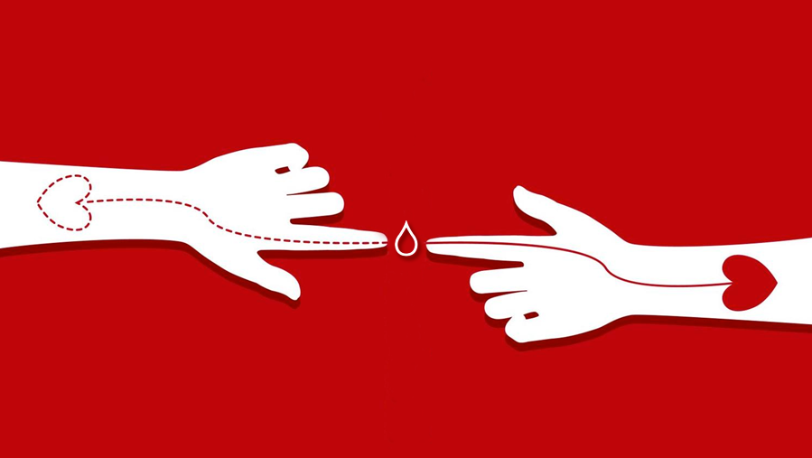
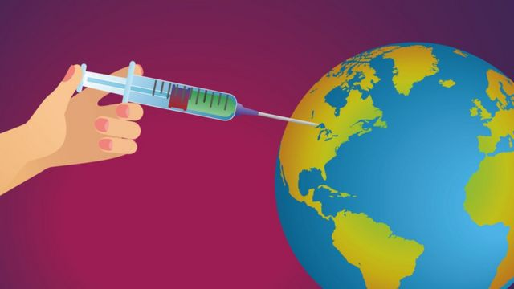
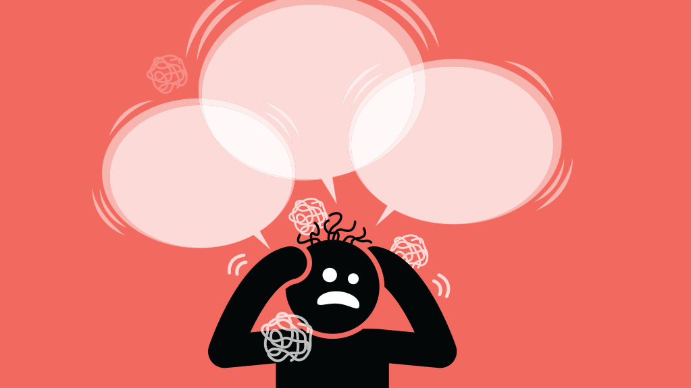

Doação de Sangue
A doação de sangue é um ato voluntário que pode ajudar a salvar muitas vidas. Em cada doação, uma pessoa doa, no máximo, 450 ml de sangue e essa única doação pode salvar a vida de até quatro pessoas. Vale destacar que, em cerca de um dia, o organismo já repõe a quantidade de sangue que foi retirada na doação. Além disso, doar sangue é um ato seguro e todos os materiais usados no procedimento são descartáveis. Desse modo, não há riscos de você ser contaminado ao doar sangue.
Quando doamos sangue, fornecemos um produto essencial para a sobrevivência de um indivíduo. Em algumas situações, a transfusão é inevitável, sendo, portanto, essencial que haja sangue em estoque, o qual é conseguido exclusivamente por doação.
Várias são as situações em que uma pessoa necessita de sangue. Entre as situações mais conhecidas, podemos citar as cirurgias de grande porte, transfusão para pacientes com doenças crônicas, como a doença falciforme e após acidentes graves.
Home:
1 / 3

2 / 3

Vacina
As vacinas são essenciais para blindar o organismo contra doenças que ameaçam a saúde, em todas as idades. Doenças altamente contagiosas e bastante comuns no passado – como a Difteria, o Tétano, a Paralisia Infantil, o Sarampo, a Caxumba e a Rubéola.
A vacinação continua sendo a forma mais segura e eficaz de prevenção, principalmente contra as doenças infectocontagiosas. O Centro de Controle e Prevenção de Doenças Infecciosas (CDC) defende a importância de um planejamento relacionado à vacinação da família. Afinal, as vacinas são instrumentos de proteção tanto individual quanto coletiva. A atualização do cartão vacinal é uma das estratégias mais custo-efetivas para a prevenção de doenças infectocontagiosas.
“É um custo benefício imensurável, pois a prevenção contra as doenças ainda é a melhor opção, uma vez que o tratamento, em muitas situações, é penoso e muito caro, mais até do que a prevenção”, diz a médica do Hermes Pardini.
As vacinas são essenciais para blindar o organismo contra doenças que ameaçam a saúde, em todas as idades. Doenças altamente contagiosas e bastante comuns no passado – como a Difteria, o Tétano, a Paralisia Infantil, o Sarampo, a Caxumba e a Rubéola.
A vacinação continua sendo a forma mais segura e eficaz de prevenção, principalmente contra as doenças infectocontagiosas. O Centro de Controle e Prevenção de Doenças Infecciosas (CDC) defende a importância de um planejamento relacionado à vacinação da família. Afinal, as vacinas são instrumentos de proteção tanto individual quanto coletiva. A atualização do cartão vacinal é uma das estratégias mais custo-efetivas para a prevenção de doenças infectocontagiosas.
“É um custo benefício imensurável, pois a prevenção contra as doenças ainda é a melhor opção, uma vez que o tratamento, em muitas situações, é penoso e muito caro, mais até do que a prevenção”, diz a médica do Hermes Pardini.
3 / 3

Ansiedade. Cuidado!
A ansiedade e os transtornos de ansiedade são um conjunto de doenças psiquiátricas marcadas pela preocupação excessiva ou constante de que algo negativo vai acontecer. Em especial durante as crises de ansiedade, as pessoas não conseguem se ater ao presente e sentem uma grande tensão, às vezes sem um motivo aparente. Esse problema pode manifestar sintomas físicos também, como sudorese e arritmia cardíaca.
De acordo com a Organização Mundial da Saúde (OMS), 264 milhões de indivíduos vivem com transtornos de ansiedade no planeta. No Brasil, eles atingem 9,3% da população, o que faz do nosso país o lídero no ranking.
A origem dos transtornos de ansiedade varia bastante de indivíduo para indivíduo. Eles podem, por exemplo, aparecer por desequilíbrios químicos do cérebro, pela falta de suporte familiar ou por trauma — principalmente na infância. Ou por uma mistura de fatores.
A ansiedade e os transtornos de ansiedade são um conjunto de doenças psiquiátricas marcadas pela preocupação excessiva ou constante de que algo negativo vai acontecer. Em especial durante as crises de ansiedade, as pessoas não conseguem se ater ao presente e sentem uma grande tensão, às vezes sem um motivo aparente. Esse problema pode manifestar sintomas físicos também, como sudorese e arritmia cardíaca.
De acordo com a Organização Mundial da Saúde (OMS), 264 milhões de indivíduos vivem com transtornos de ansiedade no planeta. No Brasil, eles atingem 9,3% da população, o que faz do nosso país o lídero no ranking.
A origem dos transtornos de ansiedade varia bastante de indivíduo para indivíduo. Eles podem, por exemplo, aparecer por desequilíbrios químicos do cérebro, pela falta de suporte familiar ou por trauma — principalmente na infância. Ou por uma mistura de fatores.